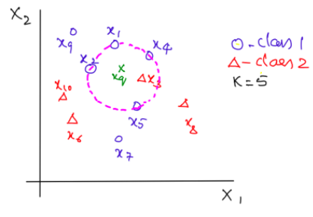
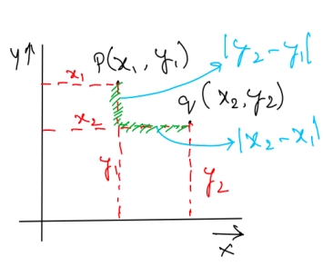

K Nearest Neighbor (KNN)
Here are the list of things covered in this post.
- Introduction
- Types
- Algorithm
- Finding optimal k
- Distance Metrics
- Time and space analysis
- Limitations
- KD Trees
- Locality Sensitive Hashing
Classification and Regression with KNN
- In K-NN classification, we consider the closest k neighbors to the given data point and assign the class label of the majority class in those k neighbors to the given data point.
- For example, let there are 10 data points, $x_1$ through $x_{10}$ that are classified into two classes $class_1$ and $class_2$ as shown in the figure below. Assume $k = 5$, the query point be $\langle x_q, ?\rangle $ and
$\langle x_1, class_1\rangle $,
$\langle x_2, class_1\rangle $,
$\langle x_3, class_2\rangle $,
$\langle x_4, class_1\rangle $,
$\langle x_5, class_1\rangle $,
be the 5 points closest to $x_q$. We see that the majority of the points have been classified as $class_1$. So, the query point $x_q$ is to be classified as $class_1$.

- In K-NN Regression, we find the output value of a query data point by averaging the outputs of its k closest datapoints.
Problem Definition
For simplicity, let us assume that we are dealing with binary class classification problem where the data $D$ is
$$\mathcal{D} = \{x_i, y_i\}_{i=1}^n$$
where $x_i \in \mathbb{R}^d$, $y_i\in \{0,1\}, \forall i \in n$. For a query datapoint $x_q$, we have to classify it as either 0 or 1.
Before going to the actual algorithm, lets look at some of the preliminaries on distance metrics that would require attention for understanding the KNN learning algorithm.
Distance Metrics
In the KNN algorithm, we find the similarity/proximity/closeness between two points $x$ and $x'$ which can be defined using some distance metric $d(x,x')$. The distance metric can be Euclidean distance or Manhattan distance or Chebyshev distance or any other similarity measurement which can capture the closeness between two points.
- Euclidean distance:
The Euclidean distance between two points $p$ and $q$ is the length of the line segment connecting them.
In the 2-dimensional space, given the points $p = (p_1, p_2)$ and $q = (q_1, q_2)$, the Euclidean distance $d(p,q)$ from $p$ to $q$ is given by the Pythogorean formula:
$$d(p,q) = \sqrt{(p_1-q_1)^2+(p_2-q_2)^2}$$
Similarly, in an n-dimensional space, given the points $p = (p_1, p_2, \ldots, p_n)$ and $q = (q_1, q_2, \ldots, q_n)$, the Euclidean distance $d(p,q)$ from $p$ to $q$ is given by the Pythogorean formula:
$$d_{euclidean}(p,q) = \sqrt{(p_1-q_1)^2+(p_2-q_2)^2+\ldots+(p_n-q_n)^2} = \sqrt{\sum_{i=1}^n (p_i-q_i)^2} $$
- Manhattan distance:
The Manhattan distance between two points $p$ and $q$ is the sum of absolute difference of the coordinates. For example, in a 2D plane, the Manhattan distance between $p(x_1, y_1)$ and $q(x_2,y_2)$ is given by
$$d(p,q) = |x_2 - x_1|+|y_2-y_1|$$
This is also called the $L_1$ distance. Below is the figure which gives you an intuition of finding Manhattan distance in 2D space.

Similarly, in an n-dimensional space, the Manhattan or $L_1$ distance between two points $p = (p_1, p_2, \ldots, p_n)$ and $q = (q_1, q_2, \ldots, q_n)$ is given by:
$$
d_{manhattan}(p,q) = |p_1-q_1|+|p_2-q_2|+\ldots+|p_n-q_n| = \sum_{i=1}^n |p_i-q_i| $$
- Chebyshev distance:
In contrast to Manhattan distance where we take the sum of the absolute differences along the coordinates, in Chebyshev distance metric we consider maximum of the absolute differences along the coordinates.
In a 2D plane, the Chebyshev distance between $p(x_1, y_1)$ and $q(x_2,y_2)$ is
$$d(p,q) = \max{\{|x_2 - x_1|, |y_2-y_1|\}}$$
In an n-dimensional space, the Chebyshev distance between two points $p = (p_1, p_2, \ldots, p_n)$ and $q = (q_1, q_2, \ldots, q_n)$ is given by:
$$d_{chebyshev}(p,q) = \max\{{|p_1 -q_1|, |p_2-q_2|,\ldots,|p_n-q_n|}\} = \max_{i=1}^n{\{|p_i -q_i|\}}
$$
We have learnt about the distance metrics, we shall look at the algorithm.
Bruteforce Algorithm for KNN
For simplicity, we shall look at KNN classifier with two classes. Given a dataset $D = \{x_i, y_i\}_{i=0}^n$, where $x_i\in\mathbb{R}^d$, $y_i=\{0,1\}$ and a query point $x_q$, we need to find the class which $x_q$ belongs to. Assume that $k$ is given.
- For each datapoint $x_i\in \mathcal{D}$, compute the distance $d(x_i, x_q)$. We can use any metric discussed above. Mostly we will be using Euclidean distance as our distance metric.
- Sort the dataset in non-decreasing order of the distances computed in step 1. Pick top $k$ datapoints which are nearest to $x_q$.
We don't actually need to sort the entire dataset. We can just select the indices of $k$ nearest points by iterating through the data $k$ times. This reduces the time complexity from O(n log n) to O(kn), and k is always small. Infact, the time complexity of the whole algorithm depends especially on this step. An efficient implementation of this step reduces the runtime significantly.
- Majority vote on the $k$ points and assign the corresponding label to $x_q$.
The algorithm is so simple and elegant, we just need to compute the distances from each datapoint to the query point and assign the majority label of k nearest datapoints.
Characteristics of KNN
- KNN is a non-parametric statistic algorithm. It is non-parametric because we do not make any assumption on the underlying distribution of the dataset. Non-parametric methods does not have fixed number of parameters or estimates of the parameters in the model.
Non-parametric statistics are statistics not based on parameterized families of probability distributions. They include both descriptive and inferential statistics. The typical parameters are the mean, variance, etc.
Unlike parametric statistics, nonparametric statistics make no assumptions about the probability distributions of the variables being assessed. The difference between parametric models and non-parametric models is that the former has a fixed number of parameters, while the latter grows the number of parameters with the amount of training data. Note that the non-parametric model does, counterintuitively, contain parameters: the distinction is that parameters are determined by the training data in the case of non-parametric statistics, not the model.
From the above discussion, we can see that our parameter in this algorithm is $k$, called the hyper-parameter.
KNN is a lazy learning algorithm because it does not learn a discriminative function from the data, but instead it memorizes the training data. Intuitively, we do not have a training phase in this algorithm. Instead, we find the distances from $x_q$ to each $x_i \in D$ whenever we have a new query point $x_q$.
For example, the logistic regression algorithm learns its model weights (parameters) during training time. In contrast, there is no training time in KNN. Although this may sound very convenient, this property doesn’t come without a cost: The “prediction” step in KNN is relatively expensive! Each time we want to make a prediction, KNN is searching for the nearest neighbor(s) in the entire training set! (Note that there are certain tricks such as BallTrees and KDtrees to speed this up a bit.)
To summarize, an eager learner has a model fitting or training step. A lazy learner does not have a training phase.
Analysis of KNN
-
Since KNN does not have a training phase (remember, K-NN is a lazy learner), it does not construct a model or a discriminative function from the data. So, the time taken for model construction is absolutely 0. And hence the space required for model construction is also 0.
-
During the runtime or testing phase, given a query point $x_q$, computing the distance from a datapoint in $\mathcal{D}$ to $x_q$ takes O(d) runtime. For n such computations, time taken is O(nd). Once we get all the distances, we can just select the indices of $k$ nearest points by iterating through the dataset $k$ times. This takes O(kn) time (and k is always small). So, the overall time complexity in the testing phase is O(nd+kn). We can use a modification of quickselect algorithm to find the $k^{th}$ percentile in O(n) time, which reduces the overall time complexity to O(nd+n). The space complexity is O(n), since we need to store all the data in the memory.
In the above algorithm, we assumed that $k$ is known. But in real world applications, we do not know what $k$ is and we need to choose an optimal (or approximately good estimate) of $k$. For that we introduce a concept called "cross-validation".
So far so good! Let us see what are the limitations of this algorithm.
Limitations
-
Since KNN is a lazy learner, it does not learn anything from the given data. Instead, it uses the training data for prediction. This can be slow for real-time prediction if there are a large number of training examples. We can use some indexing methods like KDTrees to reduce the runtime.
-
We need to find the optimal value of $k$ using some hyper-parameter tuning methods like cross-validation.
Services
- Web Design
- e-Commerce
- Logo & Branding
- Packaging